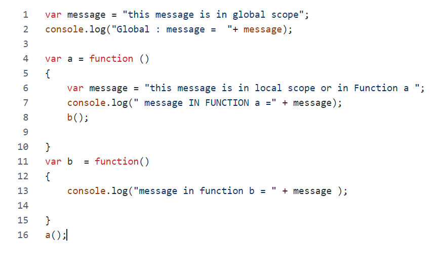

Showing variable Scope in js by HTML page
We linked a javascript file (script1.js) in html page using script tag
Variables defined inside a function are not accessible (visible) from outside the function.
Variables declared within a JavaScript function, become LOCAL to the function
Variables declared Globally (outside any function) have Global Scope.
Global variables can be accessed from anywhere in a JavaScript program.
Below image is screenshot of js file content which can also be viewed by opening the console.
